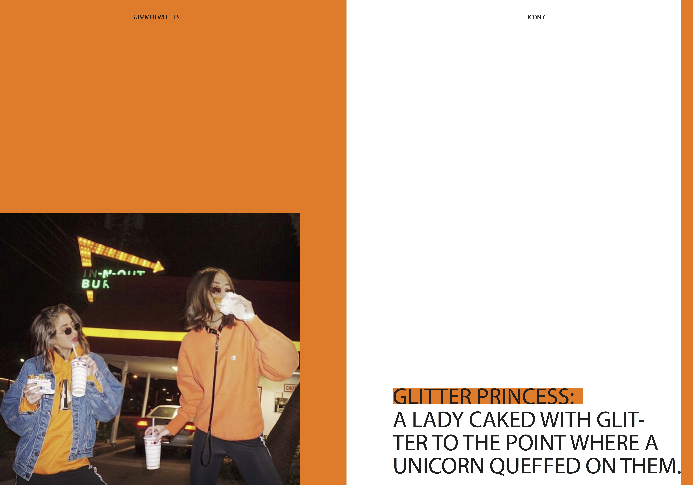
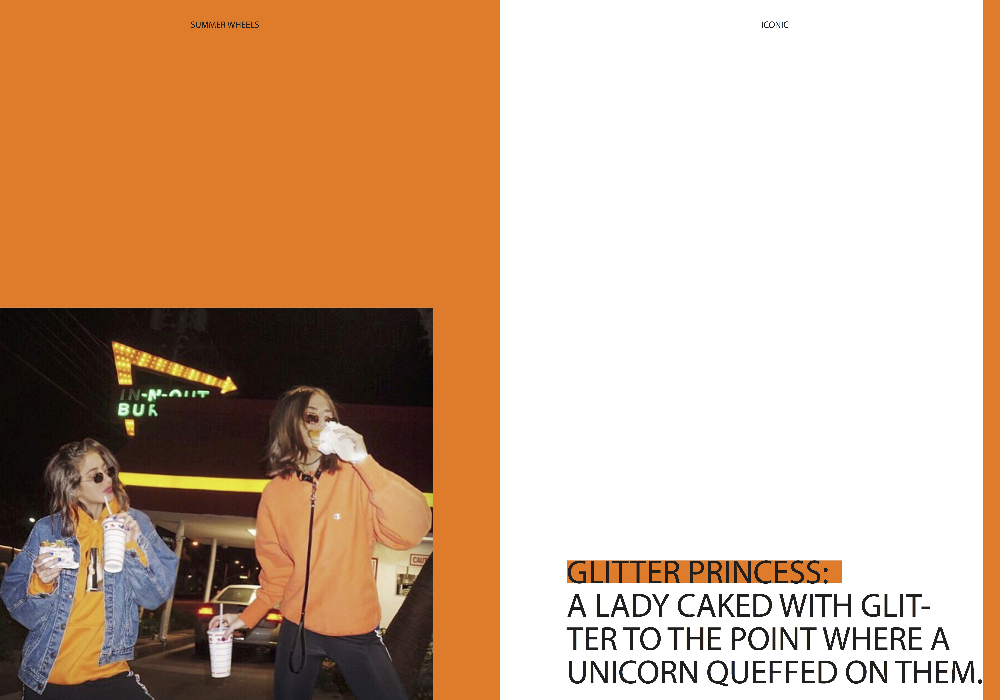

1.0 PROJECT
Design Thinking
This project involved transforming the content from a free online PDF called “Design Thinking” written by Gavin Ambrose and Paul Harris into a pocket size handbook. The major challenge was designing a typographical system for an +80 page book. I used a 12 column grid structure which I altered every chapter: you can see a 1, 2, 3, 4, and 6 column grid being used across the spreads. I added this second level of meaning to the book design to enhance the user’s experience. I paired Colfax typeface with DTL Elzevir typeface and designed the booklet in Adobe inDesign.

 
